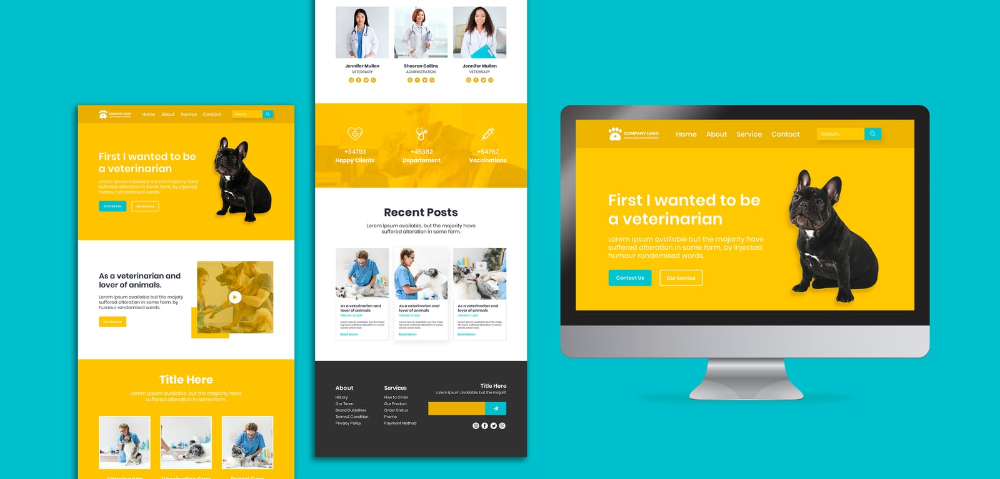

Una página web con un solo prompt: por qué es un mito y qué sí puede hacer la IA por tu negocio
Está de moda decir que con una frase y una herramienta de IA se crea una web profesional. La IA sí genera páginas, pero un borrador no es un sitio que trabaje para tu negocio. Repasamos qué hace bien la IA, por qué no hay atajos para un sitio profesional que escale, y qué dice la investigación académica, con la experiencia de un estudio que la usa todos los días.

La promesa: "con un prompt, una web impresionante"
Si pasas tiempo en redes sociales, ya viste el video: alguien escribe una frase en una herramienta de IA, sale una página con animaciones y colores, y el título promete que "ya no necesitas diseñador ni programador". Los comentarios se llenan de gente asombrada. La demostración es real: la IA sí genera una página. Lo que casi nunca te muestran es lo que pasa después.
En Gessler Studio usamos IA todos los días para diseñar y desarrollar. Por eso mismo conocemos sus límites. Este artículo separa lo que sí hace bien, lo que no hace, y qué dice la investigación académica sobre el tema.
Lo que la IA sí hace bien
No se trata de estar en contra de la tecnología. La IA generativa es útil para:
- Arrancar más rápido: borradores de estructura, maquetación inicial y variantes visuales para explorar ideas.
- Automatizar tareas repetitivas: redimensionar imágenes, escribir código de componentes comunes, traducir o ajustar textos.
- Ampliar capacidades: una persona con criterio puede producir más y probar más opciones en el mismo tiempo.
- Democratizar el acceso: alguien sin conocimientos técnicos puede hacer una primera versión de su presencia digital.
Esa lectura coincide con la literatura académica: la IA optimiza flujos de trabajo y amplía las capacidades creativas de los profesionales. El problema no es la herramienta, es creer que reemplaza el criterio.
Lo que un prompt no te da
Una página que se ve bien en una captura de pantalla no es lo mismo que un sitio que trabaja para tu negocio. Esto es lo que suele faltar:
| Lo que promete el video | Lo que pasa en la práctica |
|---|---|
| "Una web única y profesional" | Diseños parecidos entre sí, porque salen de los mismos patrones. Sin identidad de marca definida, tu sitio se ve como el de cualquiera. |
| "Lista en minutos" | Un borrador en minutos. Corregirlo, probarlo y dejarlo publicable toma tiempo y criterio. |
| "Textos incluidos" | Textos genéricos que no dicen qué hace realmente tu negocio, cuánto cuesta ni por qué elegirte. |
| "Se adapta al celular" | A veces sí, a veces se rompe en ciertas pantallas. Alguien tiene que revisarlo en dispositivos reales. |
| "Ya tienes tu formulario de contacto" | Un formulario que se ve perfecto pero no envía nada a ningún lado. Nos ha pasado, y es más común de lo que parece. |
| "SEO automático" | Sin estrategia de palabras clave, estructura, velocidad ni contenido útil, tener una página no te posiciona en Google. |
1. No sabe quién eres ni qué necesitas
Un prompt describe lo que quieres pedir, no lo que tu negocio necesita. Antes de diseñar hay que responder cosas que la IA no puede saber: quién es tu cliente ideal, qué acción quieres que haga el visitante, qué te diferencia de la competencia y qué objeciones tiene la gente antes de comprarte. Esa es la parte de estrategia, y define si el sitio vende o solo decora.
2. Produce lo promedio, no lo tuyo
Los modelos generativos aprenden de patrones existentes. Su resultado tiende a lo más común. Los estudios sobre IA y diseño gráfico señalan justamente este riesgo: la pérdida de autenticidad y singularidad. Para un negocio, verse igual que los demás es un problema real, porque tu web es muchas veces la primera impresión de tu marca. Si quieres entender por qué la identidad importa, lee cómo trabajamos la marca de un taller de muebles de autor.
3. Lo invisible es lo que hace que funcione
Un sitio profesional se sostiene en cosas que no se ven en una demostración:
- Velocidad de carga en celular con conexiones normales.
- Accesibilidad: contraste, tamaños de texto, navegación con teclado.
- SEO técnico: títulos, descripciones, datos estructurados, sitemap.
- Analítica bien instalada para saber qué hace la gente.
- Formularios y botones de WhatsApp que realmente lleguen a ti.
- Seguridad, hosting, dominio y certificado.
- Mantenimiento cuando algo cambia o se rompe.
Ninguna de estas cosas aparece en un "wow" de 30 segundos, y todas afectan si el sitio te trae clientes.
4. Alguien tiene que responder por el resultado
Cuando la IA se equivoca (y se equivoca con seguridad), alguien debe detectarlo: un dato inventado, una imagen que no corresponde, un código que funciona a medias. La investigación sobre el tema insiste en la supervisión humana y la ética como condición para usar estas herramientas bien. La responsabilidad sobre tu sitio no se delega en un prompt.
5. Hay dudas legales sin resolver
La literatura revisada señala que no existen marcos legales claros sobre los derechos de autor de lo creado con IA, y que ya hay procesos judiciales sobre el registro de diseños generados así. Si tu logo, tus imágenes o tu identidad salen de un prompt, puede que no tengas la protección que crees. Antes de construir una marca sobre ello, consulta a un profesional.
En resumen: un prompt te da un borrador. Un sitio que vende necesita estrategia, marca, contenido real, pruebas y mantenimiento. La IA acelera esas etapas, pero no las elimina, y por eso detrás de un buen sitio sigue habiendo un diseñador web.
No hay atajos: la IA hace la página, el diseñador hace el proyecto
Una IA puede hacerte una página. Lo que no puede hacer es responder por ella. La diferencia entre una página que existe y un proyecto que se ve profesional y crece con tu negocio la marca una persona con criterio de diseño web detrás. No es nostalgia por el oficio: es lo que ocurre cuando el sitio sale de la demostración y empieza a usarse de verdad.
Lo que hace que se vea profesional
"Profesional" no es que tenga animaciones. Es un conjunto de decisiones pequeñas que se sienten aunque nadie las nombre:
- Jerarquía: que el ojo sepa qué mirar primero, segundo y tercero.
- Tipografía y espaciado: tamaños, interlíneas y márgenes consistentes en todas las pantallas.
- Coherencia con tu marca: colores, tono y fotografía que se parecen a tu negocio y no a una plantilla.
- Criterio para quitar: saber qué no poner. La IA tiende a añadir; un diseñador decide qué sobra.
- Detalles de interacción: estados al pasar el cursor, mensajes de error claros, formularios que confirman que se enviaron.
Lo que hace que escale
Un sitio escala cuando puede crecer sin romperse ni rehacerse desde cero: más páginas, más productos, más idiomas, más visitas. Eso se decide en la base, no en la superficie:
- Estructura y componentes reutilizables: agregar una página nueva sin que se vea distinta o cueste lo mismo que la primera.
- Un sistema de diseño: reglas de color, tipografía y espacios que mantienen todo coherente cuando el sitio cambia de manos.
- Código ordenado: lo que genera un prompt suele funcionar en el caso que pediste y volverse frágil al modificarlo. Alguien tiene que revisarlo y organizarlo.
- Rendimiento bajo crecimiento: imágenes optimizadas, carga rápida y hosting adecuado cuando llegan más visitas.
- SEO que se acumula: una arquitectura de contenido pensada para que cada artículo o página nueva sume a las anteriores.
- Integraciones: analítica, correo, WhatsApp, pagos o un CRM conectados de forma que se puedan mantener.
La idea central: la IA es un acelerador excelente en manos de alguien que sabe hacia dónde va. Sin ese criterio, aceleras hacia un resultado genérico. Con él, el mismo trabajo sale más rápido, se ve mejor y aguanta el crecimiento de tu negocio.
Qué dice la investigación
Este artículo se apoya en un trabajo de investigación que Jordan Piza, fundador de Gessler Studio, desarrolló como estudiante en la Corporación Unificada Nacional de Educación Superior (CUN), a partir de dos artículos científicos de acceso abierto:
- Hernández Cerna (2025), "El diseñador gráfico frente a la IA: usos, impactos, ética y el futuro de la creatividad". Concluye que la IA no reemplaza al diseñador gráfico, pero exige adaptación ética, supervisión humana y nuevas habilidades como la gestión de algoritmos y la corrección de sesgos.
- Salinas Gutiérrez (2024), "La prospectiva del diseño gráfico en la era de la inteligencia artificial". Recuerda que cada revolución tecnológica, como la computadora y el software digital, transformó el perfil profesional sin hacerlo desaparecer, y analiza herramientas como Midjourney, Stable Diffusion, Adobe Firefly, Canva y Wix ADI. Concluye que el perfil del diseñador incorporará competencias de gestión, consultoría y estrategia creativa.
Ambos estudios coinciden en que la IA democratiza el diseño y optimiza el trabajo, pero también advierten riesgos: desprofesionalización, pérdida de autenticidad, vulneración de derechos de autor y ausencia de marcos legales claros.
Una precisión honesta: esos estudios hablan de diseño gráfico en general, no específicamente de páginas web. Lo que sigue sobre sitios web viene de nuestra práctica diaria, y coincide con lo que la literatura observa en el diseño.

La pregunta que todavía no tiene respuesta
La discusión académica se ha sostenido sobre todo en la teoría y en la percepción de los propios diseñadores. Falta evidencia sobre lo que las empresas piden hoy al contratar. En la investigación de Jordan se planteó una pregunta concreta: ¿cómo están cambiando los requisitos y funciones que las empresas solicitan en las vacantes de diseñador gráfico a partir de la IA generativa? Es una propuesta de estudio (analizar ofertas de empleo que mencionan herramientas como Midjourney o Adobe Firefly) y todavía no tiene resultados, así que no vamos a inventarlos. Lo que sí vemos en el día a día es que la IA no elimina la necesidad de criterio; la mueve hacia la estrategia, la supervisión y la edición.
Cómo usamos la IA en Gessler Studio
La usamos, y lo decimos abiertamente: nuestros sitios se construyen con flujos de desarrollo asistidos por IA, lo que nos permite ofrecer planes de suscripción accesibles. Pero el orden importa:
- Entendemos primero. Hablamos contigo antes de tocar una herramienta. Ver nuestro proceso.
- Definimos identidad y estructura. Marca, mensaje y páginas con objetivo claro.
- Construimos con IA como acelerador. Una persona decide, revisa y corrige cada parte.
- Probamos. Celular, velocidad, formularios, enlaces y SEO básico.
- Publicamos y acompañamos. Hosting, ajustes mensuales y mantenimiento.
Cómo saber si tu sitio "hecho con IA" está listo
- ¿Se entiende en 5 segundos qué haces y para quién?
- ¿Tiene un botón de contacto visible que probaste tú mismo, con un mensaje real?
- ¿Se ve y funciona bien en tu celular y en otro distinto?
- ¿Los textos hablan de tu negocio, con datos reales, o suenan a plantilla?
- ¿Tiene título y descripción propios en cada página?
- ¿Sabes cuántas visitas recibe y de dónde vienen?
- ¿Sabes quién lo mantiene si algo falla?
Si respondiste "no" a varias, no significa que debas tirarlo. Significa que tienes un borrador que necesita criterio. Para el panorama completo de opciones, lee nuestra guía para crear tu página web o consulta nuestros servicios de diseño web.
Referencias
- Hernández Cerna, L. M. (2025). El diseñador gráfico frente a la IA: usos, impactos, ética y el futuro de la creatividad. Paradigma Creativo, 6(1), 38–55. doi.org/10.29105/pc.v6i1.66
- Salinas Gutiérrez, I. (2024). La prospectiva del diseño gráfico en la era de la inteligencia artificial. Zincografía, 9(17). doi.org/10.32870/zcr.v9i17.249
Preguntas frecuentes
¿Se puede crear una página web profesional solo con IA?
La IA puede generar un primer borrador de una página en minutos, pero un sitio profesional necesita además estrategia, contenido real, identidad de marca, estructura pensada para convertir, versión móvil probada, velocidad, SEO técnico, formularios que funcionen, hosting y mantenimiento. Esas decisiones las toma una persona con criterio. En la práctica, la IA acelera el trabajo, no lo reemplaza.
¿La inteligencia artificial va a reemplazar a los diseñadores y desarrolladores web?
La literatura académica revisada sobre diseño gráfico e IA coincide en que la IA no reemplaza al profesional, pero transforma su trabajo y le exige nuevas habilidades, como gestionar herramientas, corregir sesgos y aportar estrategia y consultoría creativa. Lo mismo ocurrió cuando llegaron la computadora y el software digital al diseño. También advierte riesgos, como la desprofesionalización y la pérdida de autenticidad.
¿Una página hecha solo con IA aparece en Google?
No hay garantía. Que un sitio exista no lo posiciona: influyen el contenido útil y original, la estructura, la velocidad, la experiencia en celular y la autoridad del dominio. Google evalúa la utilidad del contenido, no solo cómo se produjo. Un sitio genérico, igual al de miles de negocios, tiene poco que aportar a quien busca.
¿Los diseños creados con IA tienen derechos de autor?
Es una zona todavía poco clara. La literatura revisada señala que no existen marcos legales claros y que ya hay casos judiciales recientes sobre el registro de diseños creados con IA. Si tu marca depende de una imagen o un logo generado por IA, conviene consultar a un abogado de propiedad intelectual antes de invertir en ella.
¿Gessler Studio usa inteligencia artificial para hacer páginas web?
Sí. Usamos flujos de desarrollo asistidos por IA para trabajar más rápido y ofrecer precios accesibles. Las decisiones de estrategia, diseño, contenido, revisión y pruebas las toma una persona del equipo antes de publicar cualquier sitio.
¿Quieres un sitio que sí trabaje para tu negocio?
Usamos IA para ir más rápido y criterio humano para que el resultado funcione. Cuéntanos qué necesitas.
Cuéntanos sobre tu proyecto